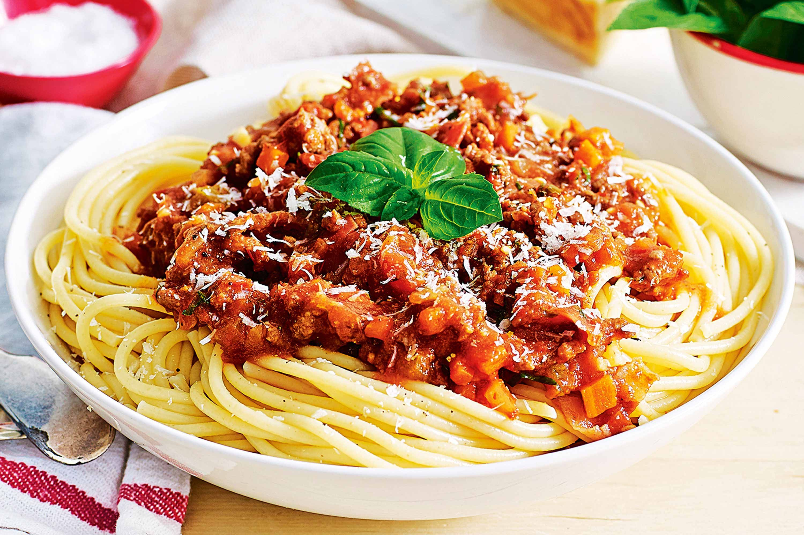

This simple sausage pasta sauce is full of flavour, but comes together in about 30 minutes. Sausages make a quick substitute for mince that's already well seasoned. Your store cupboard does the rest!
(1) Heat the oil in a large frying pan over a medium heat. Add the onion and cook for around 7 minutes, stirring occasionally, or until starting to brown.
(2) Add the sausage meat and break up into small pieces with a wooden spoon. Cook for 3–4 minutes or until golden.